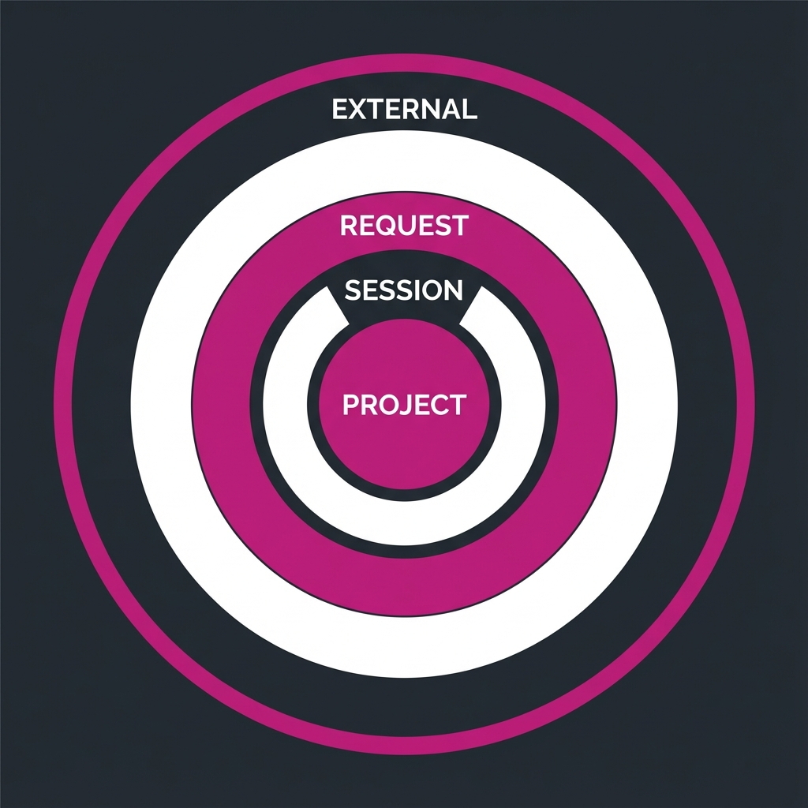
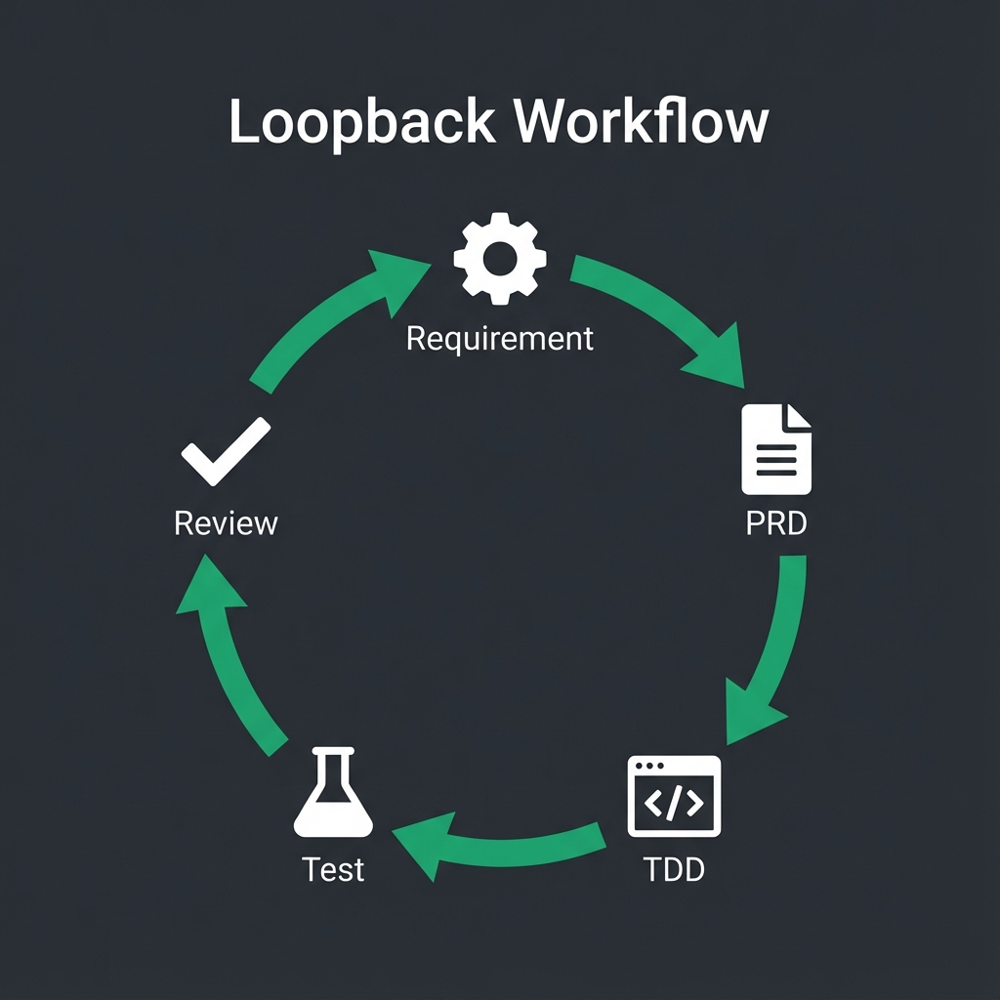

AI 페어프로그래밍
Day 2-1: Context Engineering
김학민 · SE P/J · 2025.12
Day 1 리캡
- 고민을 아웃소싱 — 생각 자체를 AI와 나누기
- 마스터셰프 — 직접 요리 ✗, 주방 지휘 ✓
- Model × Harness × Pilot — 세 요소의 균형
- Agent 체험 — 시켜놓고 지켜보기
오늘의 목표
맥락을 잘 줘야 결과가 좋다
CLAUDE.md 작성 능력 확보
반복 가능한 파이프라인 설계

AI에게 완벽한 맥락을 제공하는 컨텍스트 엔지니어링
Context
Engineering
같은 AI, 같은 요청이라도
맥락에 따라 결과가 완전히 다름
맥락의 차이
맥락 없이
"페이지 매핑 테이블
구조체 만들어줘"
맥락 제공
"HIL 모듈용, 4KB 페이지,
2TB 지원, MISRA C 2012,
ftl_types.h 호환"
결과물의 품질이 완전히 달라집니다
Context의 출처
CLAUDE.md
프로젝트 레벨
대화 히스토리
세션 레벨
파일 참조
요청 레벨
MCP
외부 도구
CLAUDE.md
프로젝트의 맥락을 알려주는 파일
이것 하나로 AI 출력 품질이 완전히 달라짐
CLAUDE.md vs .cursorrules
Claude Code
CLAUDE.md
Cursor
.cursorrules
역할은 동일 — 프로젝트 맥락 제공
도구에 따라 파일명만 다름
CLAUDE.md 필수 섹션
- 프로젝트 개요 — 이 프로젝트가 뭔지
- 코딩 컨벤션 — 따라야 할 스타일 가이드
- 빌드 & 테스트 — 빌드/테스트 명령어
- 절대 금지 — 하면 안 되는 것들
- 필수 사항 — 반드시 해야 하는 것들
CLAUDE.md 예시 (SSD FW)
CLAUDE.md 예시 (계속)
좋은 예시 vs 나쁜 예시
나쁜 예시
"깔끔하게 짜줘"
"좋은 코드로"
"잘 해줘"
좋은 예시
MISRA C 2012 준수
함수당 50줄 이내
cyclomatic complexity ≤10
구체적이고 측정 가능한 기준을 제시
실습
우리 프로젝트용 CLAUDE.md 작성하기
CLAUDE.md 작성 실습
- Step 1 — 담당 모듈의 특성 정리
- Step 2 — 코딩 컨벤션 명시
- Step 3 — 빌드/테스트 명령어 정리
- Step 4 — 절대 금지 사항 목록화
- Step 5 — 팀원과 리뷰 & 피드백
Rule-Growing
Development
코드와 룰이 함께 자라난다
Rule-Growing이란
CLAUDE.md가 점점 정교해집니다
실제 사례
CLAUDE.md 버전 관리
- Git으로 관리 — 변경 이력 추적
- 팀 레포에 공유 — 팀원 모두 동일한 맥락
- PR 리뷰 — 룰 추가/수정도 리뷰 대상
- 지속적 개선 — 발견할 때마다 업데이트
CLAUDE.md 진화 예시
팀 협업: CLAUDE.md 전략
- 루트 CLAUDE.md — 프로젝트 공통 규칙
- 모듈별 CLAUDE.md — 각 모듈 특화 규칙
- ~/.claude/CLAUDE.md — 개인 선호 설정
Claude는 모든 경로의 CLAUDE.md를 자동으로 읽어서 합칩니다
Part 1 핵심 정리
- Context Engineering — 맥락이 품질을 결정
- CLAUDE.md — 프로젝트 맥락 파일 작성
- Rule-Growing — 코드와 룰이 함께 진화
- 팀 협업 — Git으로 CLAUDE.md 공유
휴식
10분 후 Part 2: 파이프라인 설계
파이프라인
설계
반복 가능한 워크플로우 구축
파이프라인을 구축하자
각 단계에 AI 역할을 부여

자동화된 검증과 피드백 루프: AI 파이프라인
왜 파이프라인인가
- 반복 가능 — 매번 같은 품질 보장
- 검증 포인트 — 각 단계에서 확인
- 실패 시 복구 — 어디서 문제인지 명확
- 자동화 가능 — 워크플로우로 패키징
AI에게 역할 부여하기
같은 AI도 역할에 따라 다른 관점으로 작업
Multi-Agent 패턴
하나의 AI가 아니라 여러 역할로 분리
분석가
요구사항 추출
설계자
아키텍처 설계
개발자
코드 구현
검증자
품질 검사
루프백 워크플로우
실패하면 앞으로 돌아가기
루프백 흐름도
무한 루프 방지를 위해 최대 반복 횟수 설정 권장
무한 루프 방지
무한 루프 방지 없이 자동화하면 토큰비 폭탄
파이프라인에 도구 연결
검증 단계의 중요성
검증 없음
AI가 "완료"라고 하면
그대로 믿음
검증 있음
요구사항 매칭 체크
테스트 커버리지 확인
코드 품질 검사
검증 없는 자동화는 자동화된 버그 생산
TDD 실습
AI와 함께하는 테스트 주도 개발
왜 AI에게 TDD가 좋은가
인간
"나중에 테스트..."
AI
귀찮다는 개념 없음
정교하게, 일관되게
TDD는 AI에게 시키기 최적의 작업
켄트 벡이
다시 강연 다니는 이유
TDD 창시자가 AI 시대에 TDD를 다시 강조
"AI가 테스트를 완벽하게 만들어주니까
TDD가 드디어 실용적이 됐다"
TDD 사이클: Red-Green-Refactor
테스트 실패
테스트 통과
코드 개선
이 사이클을 AI와 함께 반복
TDD 프롬프트 패턴
TDD 실습 예시
테스트 케이스 유형
정상 케이스
Happy path
엣지 케이스
경계값, 빈 값
에러 케이스
잘못된 입력
성능 케이스
대용량 데이터
AI에게 "이 4가지 유형 모두 작성해줘"라고 요청
커버리지 목표 설정
실습 시간
담당 모듈에서 함수 하나 선택해서 TDD
실습 단계
- Step 1 — 테스트할 함수 선정 (담당 모듈에서)
- Step 2 — "테스트 케이스 먼저 작성해줘" 요청
- Step 3 — 테스트 실행 → 실패 확인 (Red)
- Step 4 — "테스트 통과하도록 구현해줘" 요청
- Step 5 — 테스트 실행 → 성공 확인 (Green)
- Step 6 — "리팩토링해줘" 요청 (Refactor)
Day 2 핵심 정리
- Context Engineering — 맥락이 품질을 결정
- CLAUDE.md — 프로젝트 맥락 파일 작성
- Rule-Growing — 코드와 룰이 함께 진화
- 파이프라인 — 반복 가능한 워크플로우
- TDD — AI와 함께하는 테스트 주도 개발
내일 예습
- Skills — 재사용 가능한 워크플로우 패키지
- MCP — 외부 도구 연결
- Hooks — 자동 동작 트리거
- Agent Factory — 나만의 워크플로우 구축
오늘의 과제
- ☐ 담당 모듈용 CLAUDE.md 작성 완료
- ☐ 팀원과 CLAUDE.md 리뷰
- ☐ TDD로 함수 하나 구현해보기
- ☐ Rule-Growing: 발견한 문제 CLAUDE.md에 추가
Q&A
감사합니다
김학민 · SE P/J